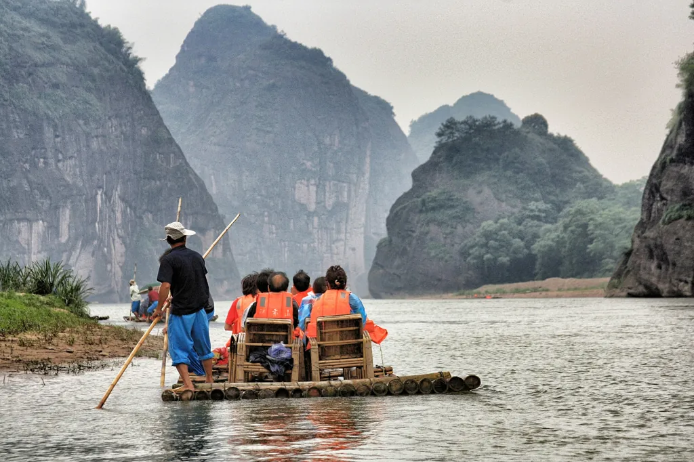

At Exciting Expeditions, we don't just aim to give you a few rapids, but to give you an adventure. We believe that you should enjoy thrilling plunges, beautiful scenery, and overnight camping (with s'mores no less!). While each activity could stand on its own, it's when they are combined that a truly special experience emerges.

Exciting Expeditions
History
The idea for Exciting Expeditions was born when John Eastmond noticed a lack of rafting companies offering well-rounded experiences. He wondered why the emphasis was just on sheer adrenaline. Feeling a desire to give people more immersive experiences, John formed Exciting Expeditions. It quickly took off and garnered a passionate fanbase.